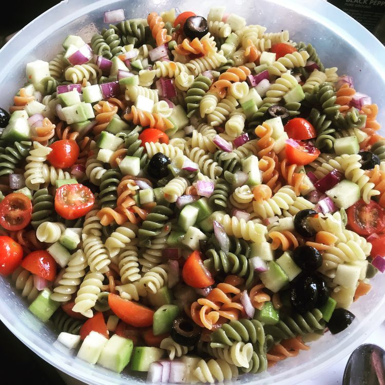

Rainbow Pasta Salad II

Description
This is a really quick and easy pasta salad. Great for picnics and BBQ's.
Ingredients
- 1 (16 ounce) package tri-colored pasta assortment
- 2 large tomatoes, diced
- 1 large cucumber, peeled and diced
- 1 red onion, finely chopped
- 1 (16 ounce) bottle Italian-style salad dressing
Steps
- Bring a large pot of lightly salted water to a boil.
Add pasta and cook for 8 to 10 minutes or until al dente;
drain and rinse in cold water..
- In a large bowl combine tomatoes, cucumbers, onion,
cooled pasta and Italian dressing. Refrigerate overnight,
or for at least 1 hour.
Return to Home